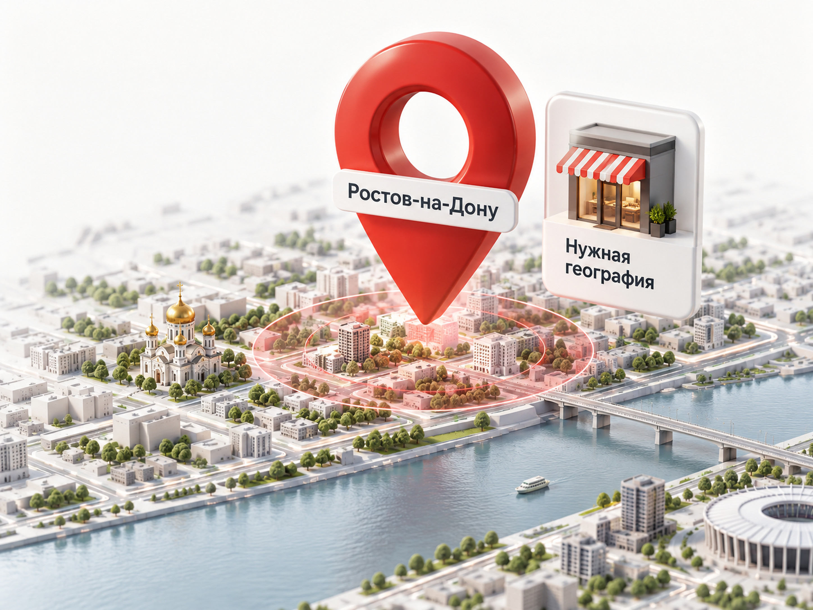

Блог о платном трафике
Директолог в Ростове-на-Дону
Я Максим Мирошников, частный директолог в Ростове-на-Дону. С 2014 года настраиваю и веду Яндекс Директ, связывая расходы с заявками и продажами. Услуги стоят от 30 000 ₽ в месяц, рекламный бюджет отдельно.
Работаю напрямую как ИП, по договору и с ЭДО. В портфолио более 40 кейсов в услугах, недвижимости, образовании и B2B. Перед запуском разбираю задачу и перспективы рекламы.
Какие услуги директолога я оказываю
Настройка Яндекс Директ с нуля. Анализирую спрос, конкурентов и сайт. Выбираю подходящие форматы: Поиск, РСЯ, Единая перфоманс-кампания, Мастер кампаний. Готовлю объявления, цели и запускаю рекламу.
Ведение рекламы. Проверяю запросы, площадки, стратегии и конверсии, перераспределяю бюджет, тестирую гипотезы и повышаю долю целевых обращений.
Аудит кампаний. Ищу причины дорогих или нецелевых заявок и падения их количества. Работающие кампании без необходимости не перестраиваю.
Аналитика лидов. Проверяю Метрику, цели и UTM-метки. При доступе к CRM отслеживаю качество заявок, продажи и стоимость клиента.
Подробнее: что входит в настройку и ведение рекламы.
Настройка Яндекс Директ для бизнеса в Ростове-на-Дону
География напрямую влияет на расходы. Одним компаниям нужны клиенты из Ростова, другим из Батайска, Аксая или всей области. Настраиваю показы под реальную зону обслуживания и оцениваю результат по территориям.
Услуги ищут с указанием города, района или без географической приставки. Поэтому подбираю запросы по смыслу, проверяю настройки геотаргетинга и откуда приходят обращения.
Объявление должно вести на страницу с нужной услугой, понятными условиями и заметной формой связи. Иначе бюджет может теряться после клика.

Как проходит работа над рекламой
- Разбор проекта. Изучаю продукт, сайт, конкурентов, рекламную статистику и то, как компания обрабатывает обращения.
- План запуска. Определяю приоритетные услуги, аудитории, географию, посадочные страницы, структуру кампаний и тестируемые гипотезы.
- Настройка и запуск. Подключаю аналитику, проверяю цели, создаю или дорабатываю кампании и контролирую первые результаты.
- Ведение и оптимизация. Анализирую расходы, заявки и их качество, отключаю неэффективные связки и развиваю те, что приносят результат.
Набор инструментов зависит от спроса и ниши: где-то основной результат даёт Поиск, где-то оправданы тесты РСЯ или автоматизированных кампаний.
Как оцениваю эффективность: от трафика до продажи
Клики и CTR не показывают прибыльность рекламы. После перехода важны:
- Трафик: сколько стоит привлечь потенциального клиента и насколько запрос соответствует услуге.
- Сайт: оставляет ли посетитель обращение, удобно ли ему связаться с компанией.
- Заявки: сколько поступило звонков, сообщений и форм, какова стоимость обращения.
- Качество лидов: сколько заявок действительно соответствует услуге и требованиям бизнеса.
- Продажи: сколько обращений превратилось в клиентов и во сколько обходится их привлечение.
Дешёвые заявки не всегда выгоднее: среди них могут быть нецелевые обращения. Поэтому при наличии CRM оптимизирую рекламу по квалифицированным лидам и продажам, а не только по конверсиям Метрики.
Примеры результатов в Яндекс Директ
Недвижимость, направление trade-in. В проекте агентства недвижимости в 2025–2026 годах за первые месяцы получено 83 заявки по средней стоимости 1774 ₽, из них 70 квалифицированных. Важную роль сыграли посадочная страница, РСЯ и использование данных воронки при оптимизации рекламы.
Визовый центр из ЮФО. После оптимизации стоимость заявки снизилась с 1290 до 434 ₽ при практически неизменном рекламном бюджете. Среди изменений была работа с географией и отключение регионов, которые давали много некачественного трафика.
Цифры не гарантируют такой же результат в другой нише: на него влияют спрос, конкуренция, сайт и обработка обращений.
Сколько стоят услуги директолога в Ростове-на-Дону
Первый месяц работы стоит 30 000 ₽. Он используется для запуска или анализа и перестройки рекламы, проверки гипотез и получения первых данных. Рекламный бюджет оплачивается отдельно и не входит в стоимость моих услуг.
Дальнейшее ведение стоит от 30 000 ₽ в месяц. Итоговая цена зависит от числа направлений, объёма кампаний и задач. По договорённости к фиксированной части может добавляться KPI или процент от рекламного бюджета. Условия определяем до начала сотрудничества.
Разовая настройка возможна, если в компании есть человек, который затем будет регулярно вести кампании. В остальных случаях обычно эффективнее постоянное сопровождение: после запуска рекламу необходимо анализировать и корректировать.
Подробнее: стоимость услуг по Яндекс Директ.
Почему со мной работают напрямую
Я сам занимаюсь проектом, без цепочки посредников и аккаунт-менеджеров. Могу указать не только на ошибки в рекламном кабинете, но и на слабое предложение, неудобную посадочную страницу или проблемы в обработке заявок. Цель такой работы не красивый отчёт по кликам, а понятный для бизнеса результат.
Нахожусь в Ростове-на-Дону, при этом веду проекты удалённо по России. Работаю как ИП, заключаю договор, использую ЭДО и предоставляю закрывающие документы.
Как начать сотрудничество
Напишите, чем занимается компания, в каком регионе нужны клиенты, какой сайт используется и запускалась ли реклама раньше. Если кампании уже работают, полезно приложить основные показатели или предоставить доступ на просмотр статистики. После знакомства с проектом предложу, что имеет смысл делать в первую очередь.
Частые вопросы
Чем директолог отличается от контекстолога?
Директолог обычно специализируется на Яндекс Директе. Контекстолог более широкое название специалиста по контекстной рекламе. При выборе подрядчика важнее опыт, аналитика и реальные результаты работы.
Можно ли показывать рекламу только в Ростове-на-Дону?
Да. Географию показов можно ограничить нужным регионом. При настройке важно также проверить расширенные параметры геотаргетинга и затем анализировать фактическую географию обращений.
Работаете ли вы с уже запущенными кампаниями?
Да. Начинаю с аудита и использую накопленную статистику. Работающие кампании не обязательно пересоздавать с нуля.
Какой рекламный бюджет нужен дополнительно к оплате услуг?
Зависит от ниши, конкуренции, географии и желаемого объёма обращений. Бюджет оцениваю после изучения спроса и экономики проекта; фиксированной суммы для всех компаний нет.
Вы работаете только в Ростове-на-Дону?
Нет. Я нахожусь в Ростове-на-Дону, но веду кампании удалённо для компаний из других регионов России.
Можно ли гарантировать определённую стоимость заявки?
Нет. До запуска можно построить прогноз, но реальная стоимость зависит не только от рекламных настроек, но и от конкуренции, сайта, предложения и качества обработки обращений.